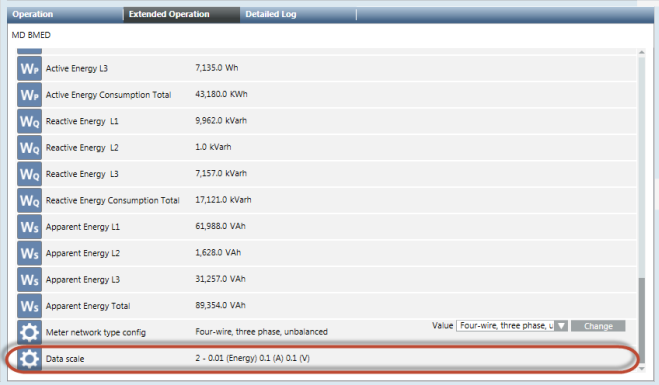
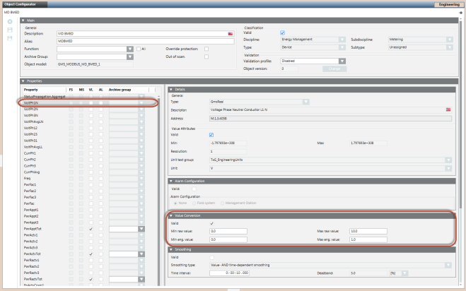

Additional Modbus Power Devices Procedures
The following procedures provide additional information on Modbus power devices
Configure the Additional Settings for the MD Meter
The MD meter returns all values in an integer format. This means that there is no value after the comma. In order to compensate for this, the device has an additional setting that must be applied to the properties.
- You have imported and connected your MD Meter device. For more information see, Integrating Modbus Power Devices into Management Platform.
- Select System Brower > Management View > Field Networks.
- Navigate to the network where you have imported the MD Meter device and select the device.
- In the Extended Operation tab, navigate to the Data scale property that displays the settings to be applied. For example, the real value for energy is 0.01, voltage is 0.1, and current is 0.1.

- Select the Object Configurator tab.
- In the Properties section, select the property where you want to apply the setting.
- Apply the required settings in the Value Conversion section.

- Click Save
 .
.
Configure the Settings for Modbus RTU Device Integration via PAC4200 Gateway
Modbus RTU devices, such as PAC3100 and/or PAC3200, can be integrated into an Ethernet network via the gateway embedded in the PAC4200 meter. PAC4200 is then integrated via Modbus TCP. Perform the following steps to integrate the devices:
- Specify the following parameters in the CSV file for the Modbus RTU devices
- SlaveId: The value for the SlaveId must be specified according to the settings in the particular PAC3200 device directly on the meter at the following location, Settings > Modbus RTU > Address.
- IP_Address: The IP address is same as that of the parent PAC4200 device.
- Port: The port number to be specified depends on the module slot used for the gateway. To know the module slot, navigate to the following location directly on the meter, Settings > ExpansionModules. If the module slot used is Mod 1, then specify 17002 as the port number in the CSV file. If the module slot used is Mod 2, then specify 17003 as the port number in the CSV file.
- Set the value of the protocol to Serial Gateway on the PAC4200 device directly on the meter at the following location, Settings > ExpansionModules > Mod1 or Mod2 (depending on the slot that is used) > Protocol.
Configure the Settings for a Stable Network Communication
If multiple Modbus RTU devices are connected to the PAC4200 gateway, the connection between Desigo CC and the gateway and/or several devices can be lost. This is indicated by the following status message in Desigo CCDevice Failure (Disconnected).
To improve the connection quality, you must set the value of the Response Time setting to 200msec or higher at the following location on the meter depending on the module slot used:
Mod 1: Settings > ExpansionModules > Mod 1 > Response Time.
Mod 2: Settings > ExpansionModules > Mod 2 > Response Time
If a higher poll interval (such as greater than 1 minute) is set, the connection between Desigo CC and several devices can be interrupted. Generally, the Keep Alive message is exchanged to establish a stable connection between Desigo CC and a Modbus device but some devices do not support this parameter. This can be checked within the Modbus settings of the particular device.
Below is a list of devices with and without the internal Keep Alive parameter.
Devices with Keep Alive Parameter | Devices without Keep Alive Parameter |
SICAM Q100 | 3VA Circuit Breaker |
SICAM 85x | 3VL Circuit Breaker |
SICAM 5200 | PAC 1500 |
SICAM 5100 | PAC 2200 |
| PAC 3100 |
| PAC 3200 |
| PAC 3200T |
| PAC 4200 |
| BMED |
If the project has to integrate devices without the Keep Alive parameter, the following entries must be added to the config file of the project:
[mod]
aliveTimeout = 60
aliveTimeoutMsg = 1 0
NOTE: There must be a space between 1 and 0.
If the config parameter must be specific to the driver instance, it can be placed under [mod_n], where n is the instance number.
For more information, please refer to the entries in the config file of the project.